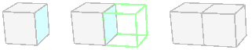
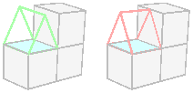
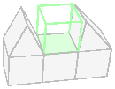
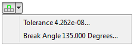
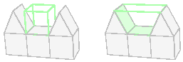
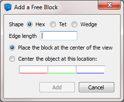
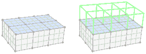
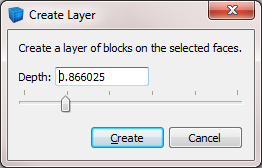

添加块体
创建新的块体集合时，它最初只有一个块体。您可以借助工具栏中的添加块体工具（）向该块体添加更多块体。另一种方式是通过上下文菜单中的命令创建一个独立块体。也可以通过标有“添加层…”的工具按钮（ ）一次添加多个块体。
）一次添加多个块体。
使用添加块体工具
单击添加块体工具后，鼠标将进入一种模式，在该模式下可以逐个添加块体。
首先单击要添加块体的面。此时会出现一个块体的绿色轮廓。再次单击同一个面，该块体便会添加到该面上。


在大多数情况下，您会有多于一种块体类型可供添加。单击某个面时，鼠标光标会变为带两个箭头的块体轮廓（）。箭头指示该块体的形状是否还有其他选项。
| 鼠标光标 | 说明 |
|---|---|
| 向上或向下滚动将显示不同的形状。 | |
| 向下滚动将显示不同的形状。 | |
| 向上滚动将显示不同的形状。 | |
| 没有其他可添加的形状。 |
您可以使用方向键或鼠标滚轮在可用形状之间滚动。使用鼠标滚轮时，指针必须位于所单击的面上，否则整个视图将放大或缩小。按 Return 或 Enter 键是接受所建议形状的另一种方式。
如果操作失误添加了错误类型的块体，您可以右键单击该块体，并从上下文菜单中选择删除块体。或者使用 Edit>Undo 命令从记录中移除该错误操作。
显示形状列表时，按 ESC 键将取消该操作。再次按 ESC 键将使鼠标退出添加块体模式。
绿色轮廓表示良好（有效）的块体，红色轮廓表示添加到模型后会形成无效几何的块体。您可以添加无效块体，但在生成网格单元之前需要修复几何。


待添加的块体可能具有与相邻面附着或未附着的面。着色的相邻面（红色或绿色）表示该面将与新块体附着；灰色面则不会附着。


为帮助确定模型中哪些面已附着，校验菜单中提供了“显示曲面（Show Surfaces）”命令。
注意：如果发现使用添加块体工具单击某个面时未显示块体列表，则该面可能有一个块体被隐藏。此时，该面的上下文菜单中会有显示隐藏块体的命令。当隐藏块体导致无法向某个面添加块体时，鼠标光标也应当会改变以提示这一点（）。
设置
添加块体工具按钮右侧的箭头会显示一个菜单，可用于设置容差和折角。


容差
容差设置决定两个点需要靠近到什么程度才被视为位于同一位置。它还决定一个点可以离任何对象多近才被视为与该对象相交。
- 推荐值会随模型变化而计算并更新。出于以下几种原因，您可能需要覆盖该值：
- 如果在容差设置过小时添加新块体，该块体中的新点可能无法按预期与已有点自动合并。
- 如果容差过大，块体可能因相交而被错误地标记为坏块（红色）。容差可能大到使点看起来与其他对象相交。该问题通常出现在相对其内部小细节尺度而言较大的模型中。将容差设为较小的值可能有助于解决坏块问题。设置容差后，使用校验工具菜单中的校验命令（
 ）查看新值是否有效果。
）查看新值是否有效果。
有一个复选框用于确定是否持续使用推荐容差。
视图容差：状态栏中包含一个“视图容差”数值，它基于块体构建窗格的当前缩放级别和点的大小。它是对点半径的低精度估计。如果在添加（或拆分）块体时遇到问题，您可以将该数值用作容差设置。
折角
折角决定在建议新块体时考虑多大的角度范围。


折角为 110 度时，无法添加填满图中所示凹谷的块体。而折角为 135 度时则可以。
添加自由块体
如果要添加一个不附着于任何其他块体的块体，可以在鼠标处于选择模式（ ）时使用上下文菜单中的“添加自由块体”命令。
）时使用上下文菜单中的“添加自由块体”命令。
将显示以下对话框：


您可以指定块体的形状和棱边长度。您可以将块体的中心放在视图中心，或提供 x、y 和 z 坐标。
当集合中没有块体且在窗格内单击鼠标左键时，也会出现该对话框。
添加层
要添加一层块体，请先选择要添加该层的面。然后单击标有“添加层…”的工具按钮（）。


将出现一个对话框，可用于调整新层的深度。


单击创建按钮以添加该层。
| 这些内容对您有帮助吗？… | FLAC3D © 2019, Itasca | 原文更新于 2020 年 10 月 8 日 |